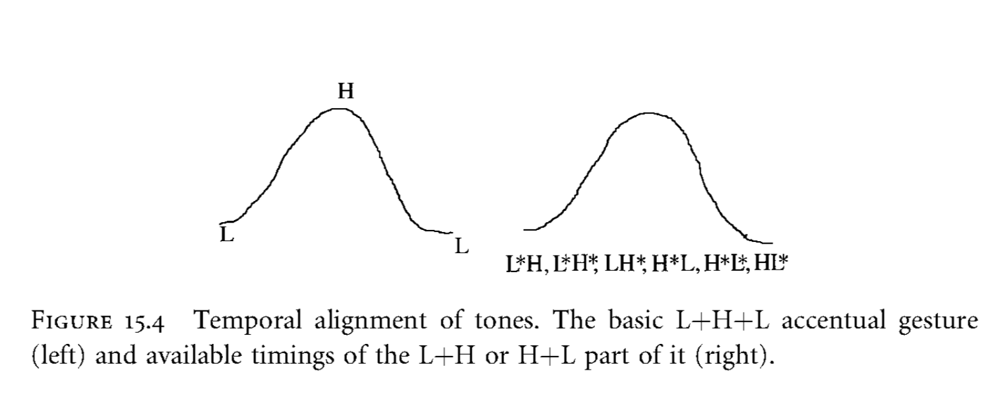

Просодия — раздел фонетики, изучающий, как при помощи просодических средств сегментные (минимальные) фонетические единицы организуются в более крупные и сложные просодические единицы. Система фонетических единиц имеет иерархическую структуру: из самых мелких, далее нечленимых сегментных единиц (звуков и фонем) образуются слоги, из слогов — фонетические слова, из фонетических слов — синтагмы, из синтагм — фразы.
Основной способ просодической организации единиц — выделение при помощи просодических средств (в первую очередь — тона, длительности и интенсивности) одной из составляющих в качестве центра (звука в слоге, слога в фонетическом слове, фонетического слова в синтагме) и подчинение ей остальных, периферийных, составляющих.
Ядро слога выделяется за счет максимальной сонорности одного из сегментов (непосредственно связанной с его относительной интенсивностью), ядро фонетического слова — за счёт ударения (противопоставления ударного слога безударным по длительности, качеству и интенсивности), ядро синтагмы — при помощи фразового акцента (резкого изменения частоты основного тона, увеличения длительности и интенсивности).
Основные диалектные различия в области просодии связаны с
- слогоделением;
- ритмической структурой фонетического слова;
- интонационным оформлением синтагмы;
- темпом речи.
В современной автосегментно-метрической фонологии (Pierrehumbert 1980; Beckman, Pierrehumbert 1986; Beckman et al. 2005) просодия описывается как трехуровневая система, включающая в себя
- просодические единицы разной размерности,
- ассоциированные с ними тональные явления и
- разделяющие их границы — просодические швы (ПШ, ‘prosodic breaks’).
Просодические единицы образуют континуум от минимальных до самых крупных: мора (M) — слог (Syl) — стопа (F) — лексическое слово в роли просодической единицы (Wd) — фонетическое слово (prosodic word, PrWd) — акцентная группа (accentual phrase, AP) — синтагма (intermediate phrase, ip) — фраза (intonational phrase, IP) — высказывание (utterance, Ut). В языках мира набор этих единиц может быть различным.
Тональные просодические явления подразделяются на лексические (слоговые и словесные тоны) и постлексические (фразовые), собственно интонационные, ассоциированные с единицами, бóльшими чем слово:
- тональные акценты (pitch accents,
N*), служащие для выделения одной из единиц в ряду подобных1; - начальные и конечные пограничные тоны (boundary tones,
%N,N%), маркирующие границы между единицами; - фразовые тоны (phrase accents,
N-), связывающие тональные акценты и пограничные тоны2.
Эти элементы просодической структуры в русских диалектах описаны в (Князев 2022a, 2022b, 2023a, 2023b).
В системе просодической нотации ToBI N может принимать различные значения: стандартное описание предполагает использование двух тонов: высокого (Н) и низкого (L), в большинстве просодических описаний языков мира используются именно они (Jun 2005, 2014). В тех случаях, когда возникает необходимость введения промежуточного значения, может использоваться символ среднего тона (М%) или (чаще) применяться нотация с использованием знака !H% (даунстеп с высокого). Знак ^, наоборот, маркирует акцент, реализующийся на более высоком уровне, чем предшествующий (upstep). Контурные тоны обозначаются с использованием символа +: восходящий — [L+H], нисходящий — [H+L]. Базовыми вариантами восходящих акцентов являются L*+H и L+H*, где астериск маркирует тот тон, который наиболее стабильно ассоциируется с ударным слогом акцентоносителя.
Знаки просодической транскрипции
H— высокий тон!H— пониженный тон (downstep)^H— повышенный тон (upstep)L— низкий тонL+H— восходящий тонH+L— нисходящий тон%— пограничный тон—— фразовый тон*— тональный акцентL*+H,L+H*,L*+H*,H*+L,H+L*,H*+L*, etc. — тайминг тонального акцента (синхронизация тонального движения относительно ударного слога слова-акцентоносителя)

Инвентарь тональных средств, используемый в данном ресурсе
Тональные акценты (pitch accents)
H*(высокий): Тональный максимум достигается до или в самом начале ударного гласного, после чего до его середины или конца сохраняется ровный высокий тон. 👁(L+)H*(восходящий): В первой половине ударного гласного повышение ЧОТ, во второй — ровный высокий тон. 👁L*+H(восходящий): Ровный низкий тон в начале ударного гласного, восходящий на его основной части, тональный максимум может достигаться на первом заударном слоге, после чего следует падение тона. На первом предударном слоге обычно понижение тона (отрицательный занос). 👁L*+H*(восходящий): Ровный низкий тон в начале ударного гласного, восходящий на его основной части, в конечной части или на первом заударном слоге — ровный высокий тон. 👁(L+H)*(восходящий): Восходящее движение тона на всем ударном слоге, тональный максимум может достигаться в инициали первого заударного слога. 👁L+H*(восходяще-нисходящий): В первой половине ударного гласного восходящее движение тона, во второй — нисходящее. 👁H*(+L)(нисходящий): В первой половине ударного гласного ровный высокий тон, во второй — понижение ЧОТ. 👁H*+L(нисходящий): Нисходящее движение тона на всем ударном гласном или большей его части. 👁H+L*(нисходящий): Нисходящее движение тона, начало которого возможно на предударном гласном, завершающееся до окончания ударного гласного. 👁H*+L*(нисходящий): В начале ударного гласного ровный высокий тон, в середине - понижение ЧОТ, в конце - ровный низкий. 👁L*(низкий): Ровный низкий тон на ударном гласном, возможно наличие падения в его начале в случае, если этот гласный первый или второй в синтагме. 👁
Пограничные тоны (boundary tones)
%H(высокий): Высокий тон в начале фразы. 👁%L(низкий): Средний или низкий тон в начале фразы. В транскрипции обычно не отмечается. 👁L%(низкий): Низкий тон на конечном слоге во фразе. 👁H%(высокий): Высокий тон на конечном слоге во фразе. 👁HL%(нисходящий): Нисходящий тон на конечном слоге во фразе после низкого тонального акцента. 👁
Фразовые тоны (phrase accents)
H-: Ровный высокий тон на всех заакцентных слогах, кроме последнего (реже - последнего и предпоследнего) во фразе. 👁L-: Ровный низкий тон на всех заакцентных слогах. В транскрипции обычно не отмечается. 👁
Для цитирования:
Князев С. В., Мороз Г. А., Дьяченко С.В. Корпус Просодии Русских Диалектов. 2024. Электронный ресурс: https://LingConLab.github.io/PRuD/, (дата обращения …)